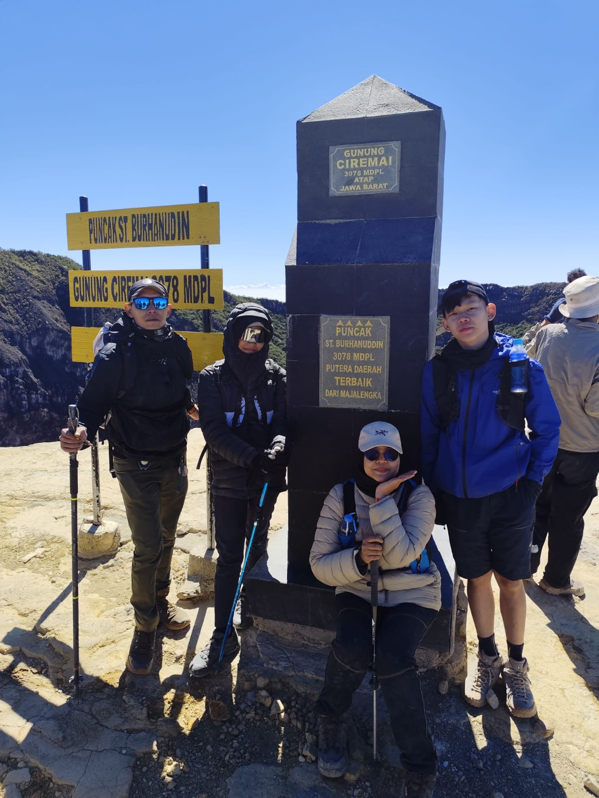
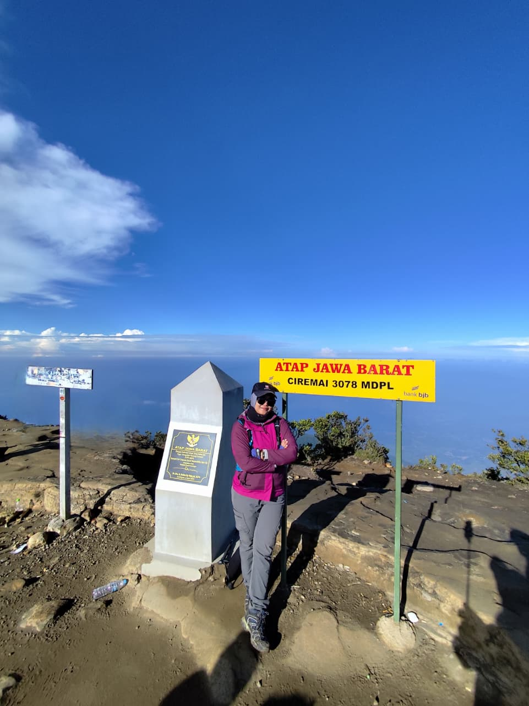
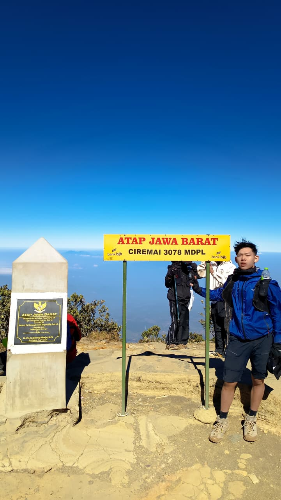
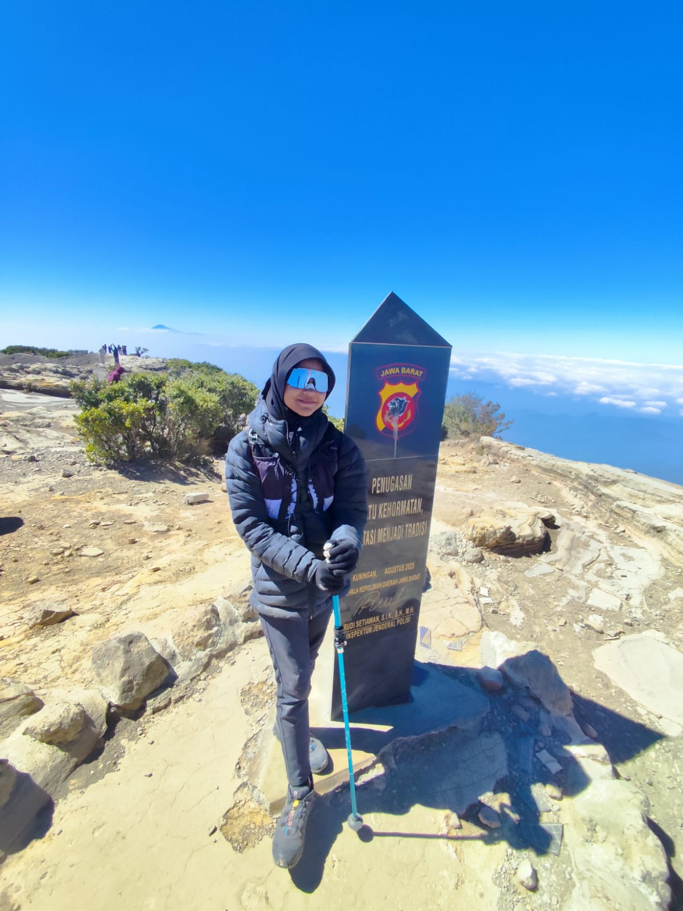

Tentang keluarga
Tentang keluarga saya keluarga Deni. saya dan keluarga saya pernah mendaki gunung bersama
untuk mendaki gunung tertinggi di jawa barat yaitu gunung ciremai yang berada pada wilayah kabupaten majalengka
dan kabupaten kuningan.
Aktivitas yang paling sering saya lakukan adalah hiking atau mendaki gunung.
Salah satu pengalaman yang paling berkesan adalah ketika saya muncak bareng ke
Gunung Ciremai, yang dikenal sebagai atap Jawa Barat.
Setiap langkah di jalur pendakian terasa lebih ringan kalau dilalui bersama keluarga.
Anggota Keluarga
Daftar Anggota Keluarga Deni
| No. |
Nama |
Peran dalam Keluarga |
Pendidikan / Pekerjaan |
Kegiatan Favorit |
| 1 |
Deni |
Ayah |
Sarjana Ekonomi, bekerja sebagai PNS |
Hiking |
| 2 |
Mila |
Ibu |
Ibu rumah tangga |
Hiking |
| 3 |
Naufal |
Anak pertama (pembuat halaman ini) |
Mahasiswa |
Hiking |
| 4 |
Naura |
Adik |
Siswi SD kelas 6 |
Hiking |
Kenalan Lebih Dekat
Deni — Ayah
|

|
Ayah adalah lulusan sarjana ekonomi dan saat ini bekerja sebagai PNS.
Di tengah kesibukan kerja, ayah tetap meluangkan waktu untuk mengajak
keluarga menjelajah alam dan mendaki gunung.
|
Mila — Ibu
|

|
Ibu adalah ibu rumah tangga yang mengurus rumah dan keluarga setiap hari.
Ibu juga ikut mendaki bersama kami, sehingga perjalanan ke gunung selalu
terasa seperti liburan keluarga.
|
Naufal — Anak Pertama
|

|
Saya seorang mahasiswa. Halaman ini saya buat sebagai tugas mata kuliah
Desain Web, dengan memakai HTML saja. Di luar kuliah, saya suka mendaki gunung dan saya juga
selain mendaki gunung ciremai pernah juga ke gunung slamet yang berada di jawa tengah dengan
panggilan atap jateng
|
Naura — Anak Kedua
|

|
Naura masih duduk di kelas 6 SD. Walau paling kecil, ia ikut dalam
petualangan keluarga di alam.
|
Kenangan di Puncak Ciremai
Pendakian ke Gunung Ciremai adalah salah satu momen terbaik saya.
Gunung ini sering dijuluki atap Jawa Barat karena ciremai adalah puncak
tertinggi di provinsi jawa barat. saya mendaki bersama sebagai satu keluarga,
dan sampai di puncak bareng.
Detail Perjalanan Kami:
- Waktu Pendakian: Liburan semester lalu (Agustus 2026)
- Jalur yang Dipilih: Jalur Palutungan Kuningan
- Tantangan Terberat: Tanjakan Asoyy, lumayan bikin kaki pegal
- Momen Terbaik: Bisa melihat matahari terbit atau sunrise bareng seluruh anggota keluarga di puncak tertinggi
Jawa Barat!
|
|